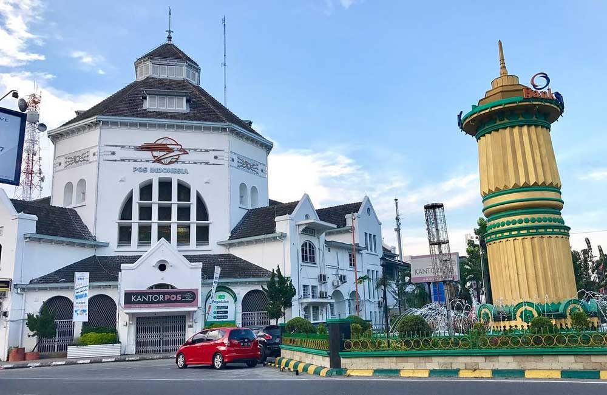

Medan is the capital city of North Sumatra province in Indonesia and is the fourth-largest city in the country. Known as a vibrant melting pot of cultures, Medan is home to diverse ethnic groups, including Batak, Malay, Chinese, Indian, and Javanese communities, each contributing to the city's rich culinary and cultural heritage. The city serves as a major economic hub in western Indonesia, with strong connections to trade, agriculture, and industry. Medan is also the gateway to the famous Lake Toba and Bukit Lawang, making it a popular transit point for tourists. Architecturally, it features a mix of colonial Dutch buildings, mosques, churches, and Chinese temples, reflecting its multicultural past and present.
